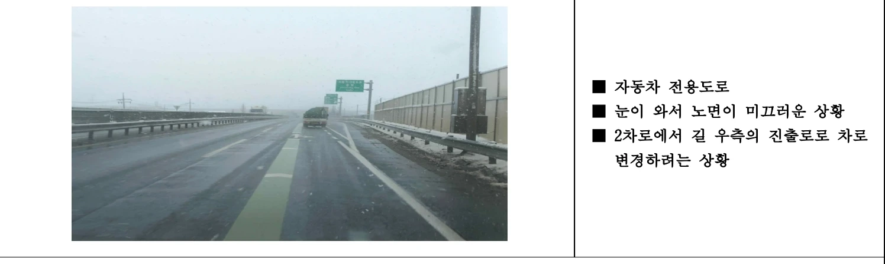

727. Which of the following are the safest ways to drive in the given situation? (Select TWO)

- ①Stop temporarily on the shoulder and exit.
- ②Exit at the section marked with both dotted and solid white lines.
- ③If you pass the off-ramp, reverse the vehicle and attempt to exit at the intended location.
- ④As the road surface is slippery, slow down sufficiently to change lanes safely.
- ⑤If you are stuck in traffic, try to exit quickly even if you have to cut in.
Show answer
Answer
② Exit at the section marked with both dotted and solid white lines.
④ As the road surface is slippery, slow down sufficiently to change lanes safely.
Reference
The driver of a car or horse must not change the course of the car or horse in places where safety signs are installed and changing course is specifically prohibited. However, this does not apply if there are obstacles due to damage to the road or road construction (Article 14, Paragraph 5 of the Road Traffic Act). You can change lanes in the white dotted line section, but you must not change lanes in the white solid line section. Also, even when there are double dashed and solid lines, you can only change lanes on the side with the dotted line.
Reference text is a machine translation for study.